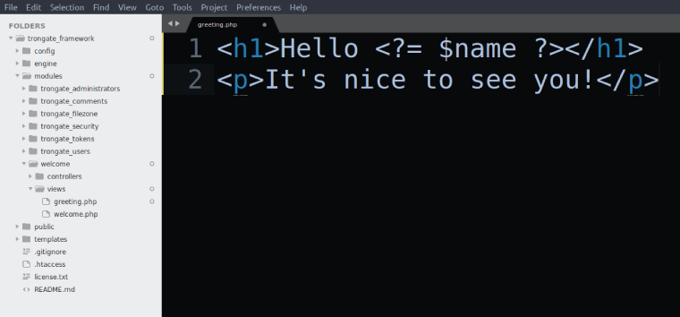

View files have access to a wide range of Trongate's inbuilt features. Of course, since view files are PHP files it means that they can have access to all of PHP's inbuilt functionality as well. However, the most commonly used method for passing data into view files is to pass an array of data via a controller file. For example:
$data["first_name"] = "David";
$data["last_name"] = "Connelly";
$this->view("welcome", $data);
When view files are loaded, the data array is immediately extracted and the properties of the data array may be treated like ordinary variables, from within the view file. You can also have other data types - such as objects, arrays and booleans - passed into your view files. Below is an example of an array of cities being passed into a view file, along with a day of the week:
function information() {
//create an array of cities
$cities[] = "New York";
$cities[] = "London";
$cities[] = "Paris";
//add "cities" onto data array
$data["cities"] = $cities;
$data["today"] = "Monday";
$this->view("information", $data);
}
var_dump($data);json($data);The moment an array (such as $data) is passed into a view method, the array will be extracted immediately and all of the properties of the array can be treated like ordinary variables. For example, our greeting method could be modified so that it passes a name into the view file, like so:
function greeting() {
$data["name"] = "David Connelly";
$this->view("greeting", $data);
}
To have the value from the 'name' variable displayed on our browser, we could use PHP short tags to echo the name variable. For example,

This would produce,